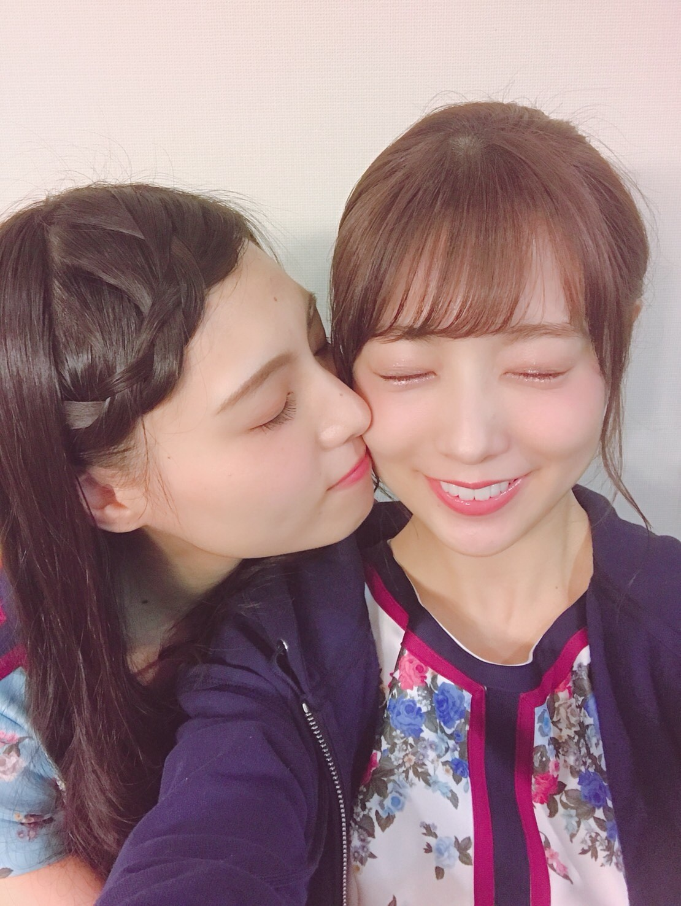
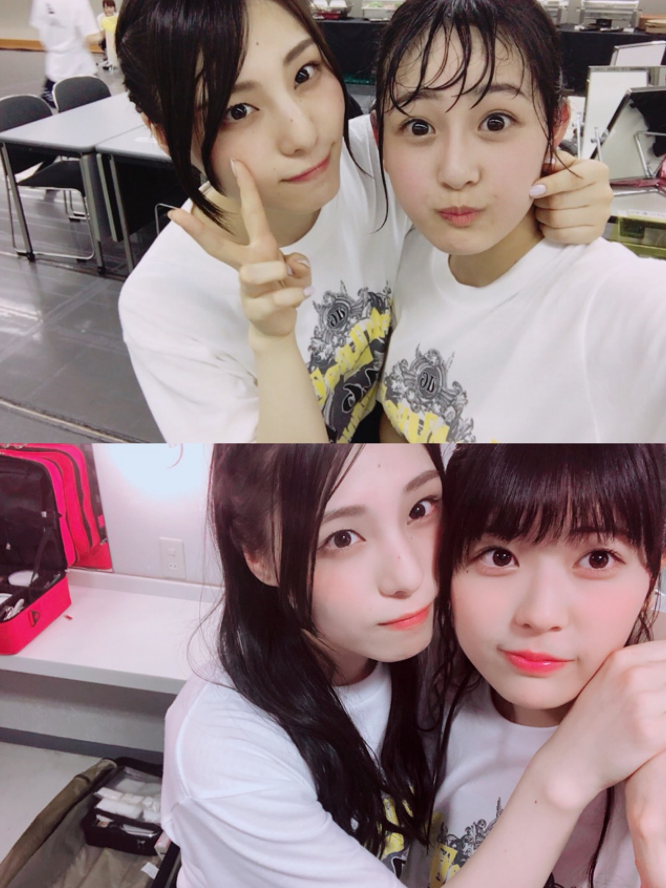
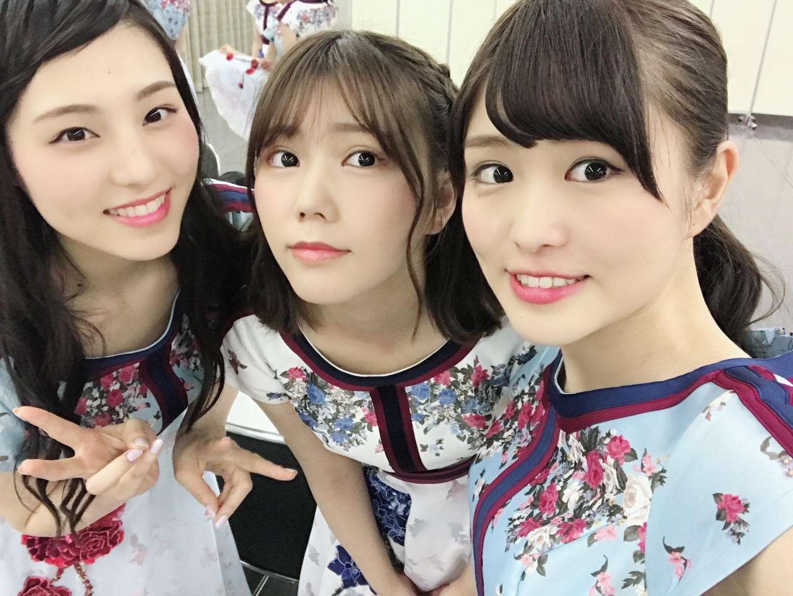
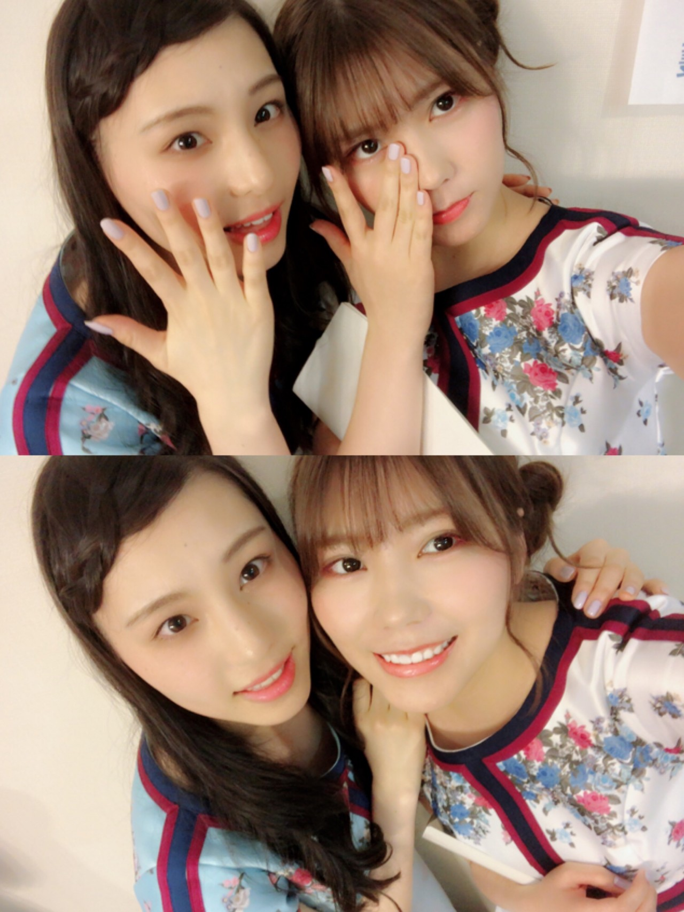
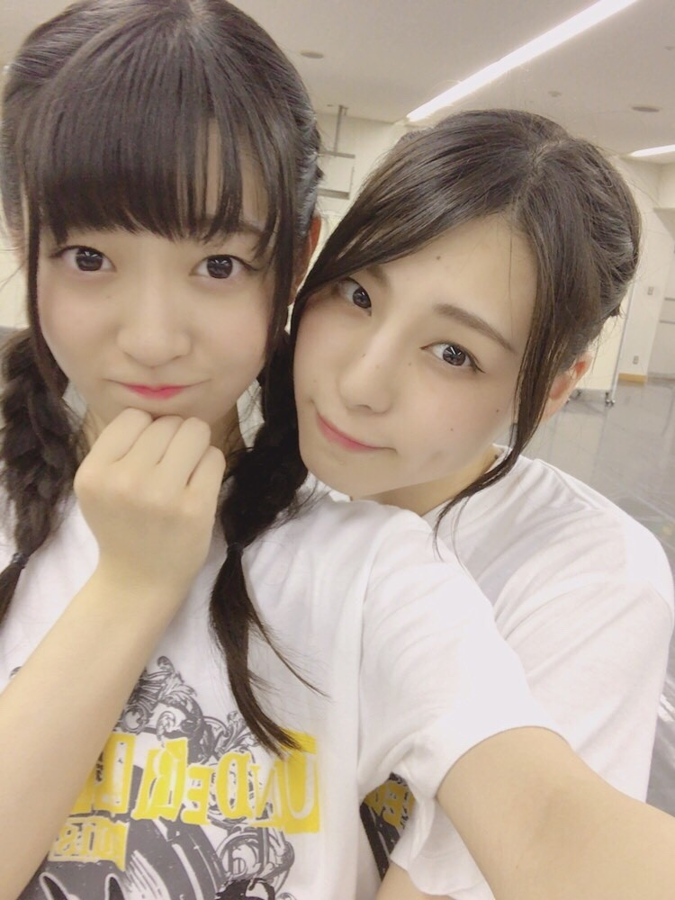

| 2018/05 24 Thu | 何を残せただろう。_(．．*)vol.238 |
みなさんこんばんは
相楽伊織です
載せきれなかった写真載せます♡





本当に大好きなみんなです♡
前回のブログに2000を超えるコメント
ありがとうございましたm(__)m
みんなもブログで私たちのこと書いてくれてて
本当に嬉しい(^^)
同時にやっぱり寂しいよ～(;_;)(;_;)
改めてメンバーのこと大好きなんだなって
思います( .. )♡
アンダーライブの感想を少し。
今回のアンダーライブは
3期生が加わって新体制でのライブでした。
分からない事だらけの中
3期生は本当に頑張ってくれました！
中部ツアーが始まってから
お互い知れたことも沢山あって
自然と溶け込んで一体感が生まれたし
それがお客さんに伝わるくらい
いい関係になれたかなと思ってます(^^)
今回アンダーライブ一緒に出れなかったメンバーも
私は大好きだから
最後は一緒に出たかったなって気持ちもありましたが、
悔いのない最高のライブに出来たので
本当に良かったと思ってます(^-^)/
最終日はひなぴょんとお揃いのネイルにしたの！
こんなに私の卒業で
泣いてくれる人がいて
悲しいって思ってくれる人がいて
私は幸せです。
これからファンの皆さんに
少しずつ恩返しをしていきたいと思ってます！
活動中にしっかり出来ていたら
違う今があったのかもしれないけど
出来なかった過去を想っても仕方ないので
今の私が出来る恩返しをしていきたいです(^^)
また時間が出来たら
SHOWROOMやりますね！
もう少しお待ちを。。(><);
i o r i .

コメント(718)
2018/05/24 20:36